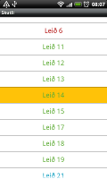

About
Skutli is a small Android app (v2.2 and up) that uses data from www.straeto.is to display the next time your bus arrives at your favourite station in Reykjavík.
It is written by Baldur.
Status
Skutli is currently in version 0.1.0. The main screen displays a list of all the routes and each route has a screen where the next arrival time for the main stations is displayed. That is all for now.
Screenshots
This breif overview wouldn't be complete without screenshots!
Main screen
Route screen
Downloads
Or just a download, as there is only one version yet!
apk file
Version 0.1.0 (23kb).
Source
The source code is available at GitHub.
Beware that although the app itself is tiny the data it uses is arount 450kb and it is stored on the internal memory of your phone (that might change in the future). When you open the app for the first time the main screen consists of only one button that starts downloading all the data, which is stored on my server at baldur.biz/bus.
Acknowledgement
My pal Guðmundur Bjarni is partly responsible for the app; he sparked my interest with his super cool webscraper for straeto.is, written in glorious CoffeeScript. He's such a geek!

{kind=link}
{kind=link}
Tweet